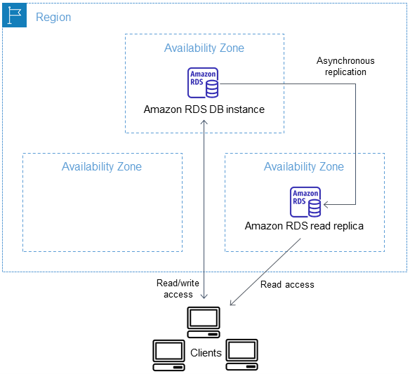
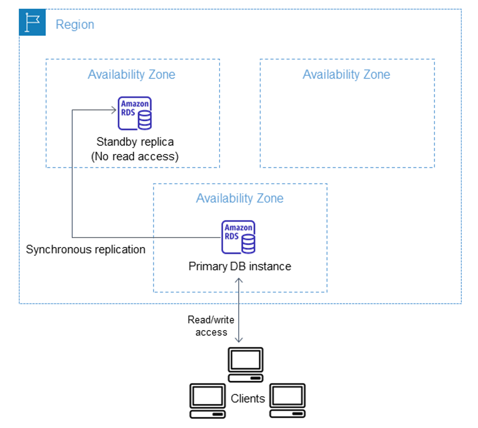
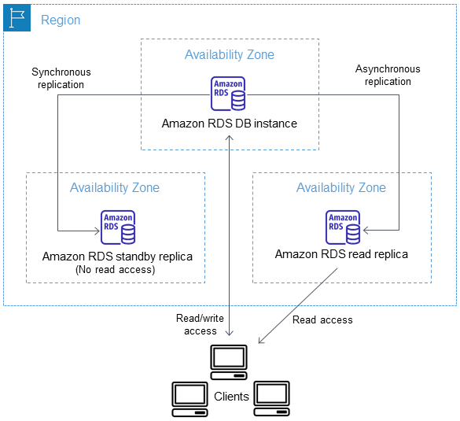
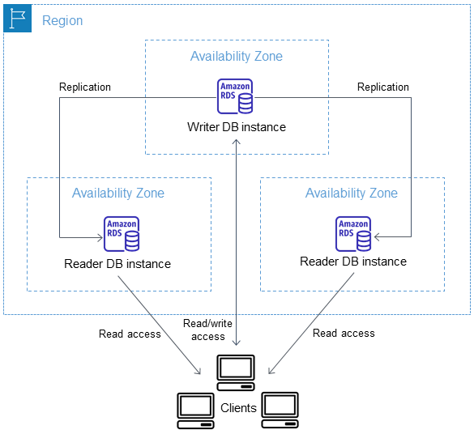

Despliegue Multi-AZ
Réplicas de lectura
Para crear una réplica de lectura en otra zona de disponibilidad, la instancia RDS debe tener activada los backups con una retención de más de 0 días.
Para ello utiliza la opción dentro del menú Actions.
Al crear una réplica de lectura, se especifica una instancia de base de datos existente como origen. Amazon RDS toma una instantánea de la instancia de origen y crea una instancia de solo lectura a partir de dicha instantánea. Posteriormente, Amazon RDS utiliza el método de replicación asíncrona del motor de base de datos para actualizar la réplica de lectura cada vez que se produce un cambio en la instancia de base de datos principal.
La réplica de lectura funciona como una instancia de base de datos que solo permite conexiones de lectura.
En este tipo de despliegues se generan dos endpoints: uno para escritura (y lectura) y otro únicamente para lectura.

Tipos de despliegues Multi-AZ
Los despliegues Multi-AZ pueden tener una o dos instancias de base de datos en espera. Cuando el despliegue tiene una sola instancia de base de datos en espera, se denomina despliegue de instancia de base de datos Multi-AZ. Este despliegue cuenta con una instancia en espera que proporciona soporte de conmutación por error, pero no procesa tráfico de lectura. Cuando el despliegue tiene dos instancias en espera, se denomina despliegue de clúster de base de datos Multi-AZ. Este despliegue cuenta con instancias en espera que proporcionan soporte de conmutación por error y también pueden procesar tráfico de lectura.
Despliegue Multi-AZ. Réplica en espera
Se puede crear una réplica en espera (standby) en otra zona de disponibilidad si la instancia está encendida, usando la opción Modify.
Este tipo de despliegue se le denomina despliegue Multi-AZ.

Las réplicas en standby se replican síncronamente para asegurar el funcionamiento ante una caída de la instancia principal. Esto puede aumentar la latencia de escritura al tener que escribirse los datos en ambas instancias síncronamente. También puede aumentar la latencia en caso de caída de la instancia principal, mientras se activa la instancia de standby.
Despliegue Multi-AZ. Réplica en espera + réplica de lectura
En un despliegue Multi-AZ, se puede configurar una réplica de lectura para una instancia de base de datos que también tenga una réplica en espera configurada para alta disponibilidad. La replicación con la réplica en espera es síncrona. A diferencia de una réplica de lectura, una réplica en espera no puede procesar tráfico de lectura.
En el siguiente escenario, los clientes tienen acceso de lectura/escritura a una instancia de base de datos principal en una zona de disponibilidad. La instancia principal copia las actualizaciones de forma asíncrona a una réplica de lectura en una segunda zona de disponibilidad y también las copia de forma síncrona a una réplica en espera en una tercera zona de disponibilidad. Los clientes solo tienen acceso de lectura a la réplica de lectura.

Clúster Multi-AZ
Con un clúster de base de datos Multi-AZ, se replican los datos de la instancia de base de datos de escritura a ambas instancias de lectura mediante las capacidades de replicación nativas del motor de base de datos. Cuando se realiza un cambio en la instancia de base de datos de escritura, este se envía a cada instancia de lectura.
Los despliegues de clústeres de base de datos Multi-AZ utilizan la replicación semisíncrona, que requiere la confirmación de al menos una instancia de lectura para que se confirme un cambio. No requiere la confirmación de que los eventos se hayan ejecutado y confirmado por completo en todas las réplicas.
Las instancias de lectura actúan como destinos de conmutación por error automáticos y también gestionan el tráfico de lectura para aumentar el rendimiento de lectura de la aplicación. Si se produce una interrupción en la instancia de escritura, RDS gestiona la conmutación por error a una de las instancias de lectura. RDS realiza esta conmutación en función de qué instancia de lectura tenga el registro de cambios más reciente.

Cluster Multi-AZ endpoints
Cluster endpoint
Se conecta a la instancia de escritura actual de dicho clúster. Este punto de conexión es el único que puede realizar operaciones de escritura, como instrucciones DDL y DML. También puede realizar operaciones de lectura.
Cada clúster de bases de datos Multi-AZ tiene un cluster endpoint y una instancia de base de datos de escritura.
Si la instancia de escritura actual de un clúster de bases de datos falla, el clúster Multi-AZ conmuta automáticamente a una nueva instancia de escritura. Durante la conmutación por error, el clúster continúa atendiendo las solicitudes de conexión al punto de conexión de clúster desde la nueva instancia de escritura, con una interrupción mínima del servicio.
Reader endpoint
Proporciona compatibilidad con conexiones de solo lectura al clúster de base de datos, como consultas SELECT. Al procesar estas instrucciones en las instancias de lectura, este punto de conexión reduce la sobrecarga en la instancia de base de datos de escritura. También ayuda al clúster a escalar la capacidad para gestionar consultas SELECT simultáneas. Cada clúster Multi-AZ tiene un punto de conexión de lectura.
El punto de conexión de lectura envía cada solicitud de conexión a una de las instancias de base de datos de lectura.
Instance endpoint
Se conecta a una instancia de base de datos específica dentro de un clúster de base de datos Multi-AZ.
Cada instancia en un clúster tiene su propio endpoint. El endpoint proporciona control directo sobre las conexiones al clúster. Por ejemplo, en escenarios donde una aplicación cliente podría requerir un balanceado de carga más preciso según el tipo de carga de trabajo. En este caso, se pueden configurar varios clientes para que se conecten a diferentes instancias de lectura en el clúster y así distribuir las cargas de lectura.
Cluster parameter group
En un clúster de base de datos Multi-AZ, un cluster parameter group de base de datos actúa como contenedor de los valores de configuración del motor que se aplican a todas las instancias de base de datos del clúster. La configuración del cluster parameter group se utiliza para todas las instancias de base de datos del clúster.
Retraso de réplica
El retraso de réplica es la diferencia de tiempo entre la última transacción en la instancia de base de datos de escritura y la última transacción aplicada en una instancia de lectura. La métrica ReplicaLag de Amazon CloudWatch representa esta diferencia de tiempo.
Aunque los clústeres de bases de datos Multi-AZ permiten un alto rendimiento de escritura, puede producirse un retraso de réplica debido a la naturaleza de la replicación basada en motor. Dado que cualquier conmutación por error debe resolver el retraso de réplica antes de promover una nueva instancia de base de datos de escritor, es importante supervisar este valor.